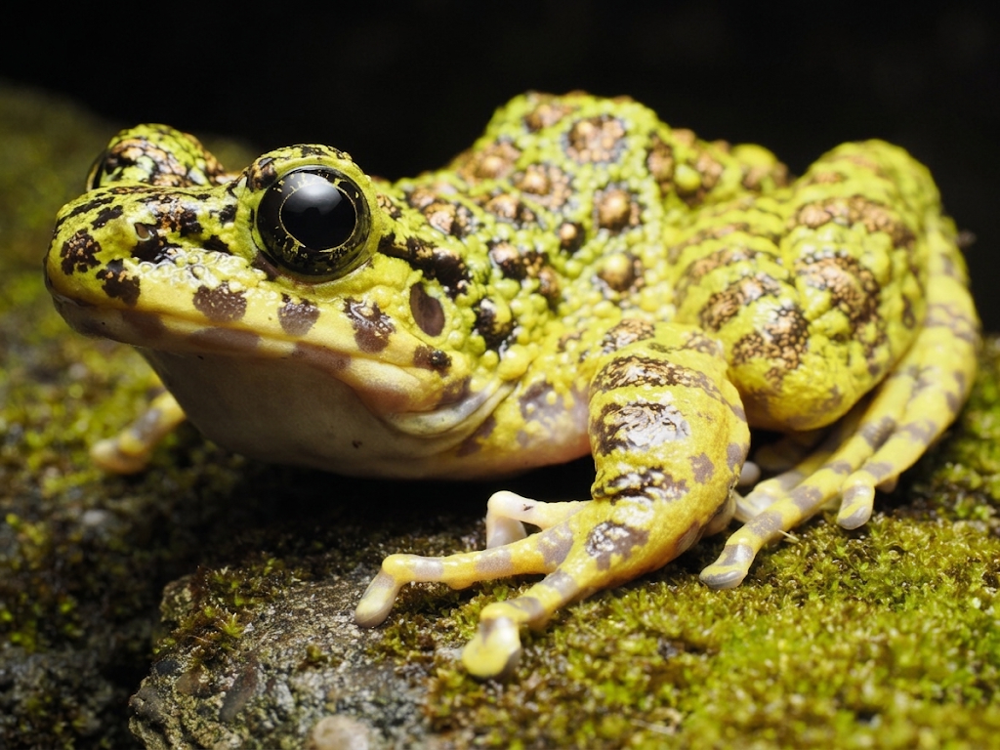

```
AMAMI OSHIMA / NIGHT FIELD TOUR
懐中電灯の先に、
懐中電灯の先に、
奄美だけの夜が広がる。
アマミノクロウサギ、ハブ、奄美固有のカエルたち——天然記念物の宝庫、奄美大島の森を専属ガイドと歩くナイトツアー。
🔦 ナイトツアーを見る ```
アマミノクロウサギ、ハブ、奄美固有のカエルたち——天然記念物の宝庫、奄美大島の森を専属ガイドと歩くナイトツアー。
🔦 ナイトツアーを見る ```FIELD NOTE — 今の時期に観察しやすい生き物
季節ごとに出会える生き物は変わります。このセクションはAIが観察データをもとに毎月自動更新する予定です(実装中)。
HOW IT WORKS
ビッグ2駐車場、朝戸トンネル駐車場など。名瀬近辺の宿なら送迎相談可。
専属ガイドと一緒に固有種を探しながら歩きます。
採集目的のガイドはお断りしています。観察・撮影を楽しみましょう。